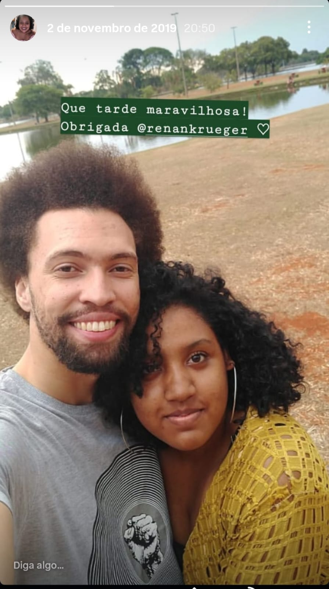
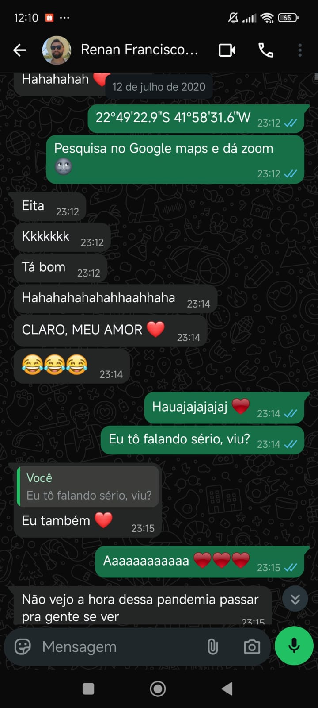

Preparei este presente digital com muito carinho pra você. Aqui você verá alguns dos capítulos mais importantes da nossa vida juntos. Espero que goste, my Sunshine!
Algumas histórias começam por acaso.
A nossa começou por insistência de uma amiga que tinha certeza de que deveríamos nos conhecer.
Em 7 de outubro de 2019, começamos a conversar. E já no dia 26 nos vimos pela primeira vez. Não esqueço do seu olhar sobre o meu e o calor que seu sorriso me transmitia. Tudo em mim se transformou. Naquele dia eu já soube que viveríamos uma linda história de amor.
E ali, começávamos também a construir a vida que vivemos hoje.


Alguns pedidos de namoro acontecem em restaurantes, shoppings, parques...
O nosso aconteceu online, e ao mesmo tempo em uma rua.
Uma rua chamada "Namora Comigo".
E, felizmente, a resposta foi sim. Foi o verde mais bonito que já joguei kkk